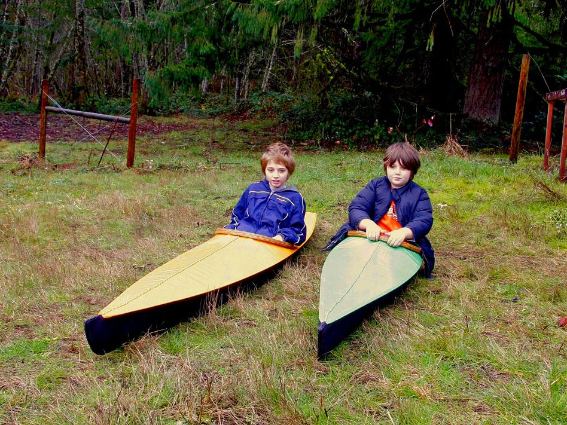

| Kidarka and Sea Flea by Wally Jones (US) | Menu Previous Page Next Page |
|

Wally, from Manzanita, Oregon built as a Christmas present for two child relatives, a Kidarka and a Sea Flea. Both kayaks were built with Western Red Cedar and lashed with artificial sinew. The skin is the "old/original 850" 8 oz from Skinboats, and was covered with 2 coats of Rustoleum Boat Bottom anti fouling black paint (Hull), and 2 coats of Tinted Porch and Floor Polyurethane Enamel (deck). It became too cold to add a final coat of ZAR. Wally used pieces of marine plywood glued and pegged to the plywood cross section (#2 & #3) to support the 1/4 inch oak slats (which were lashed to the small plywood support) for a seat.
|
|